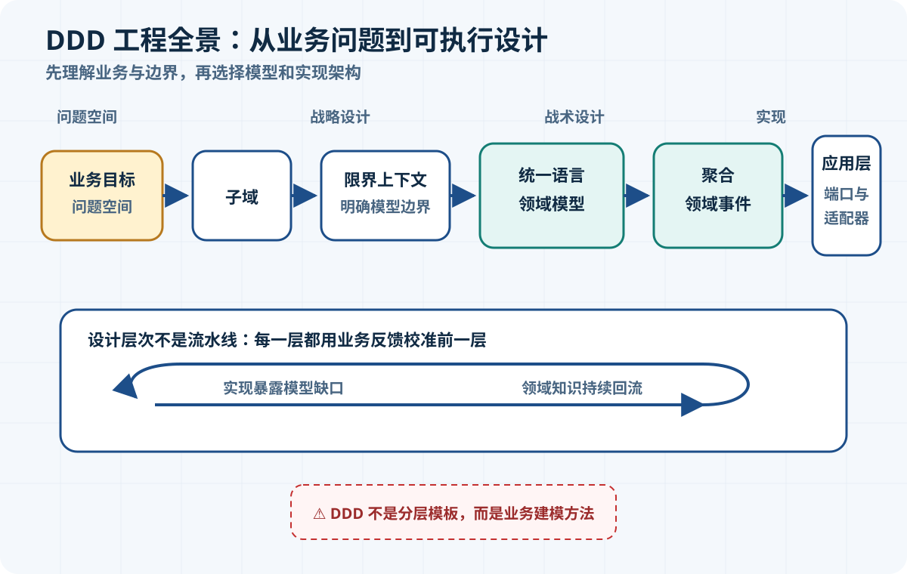
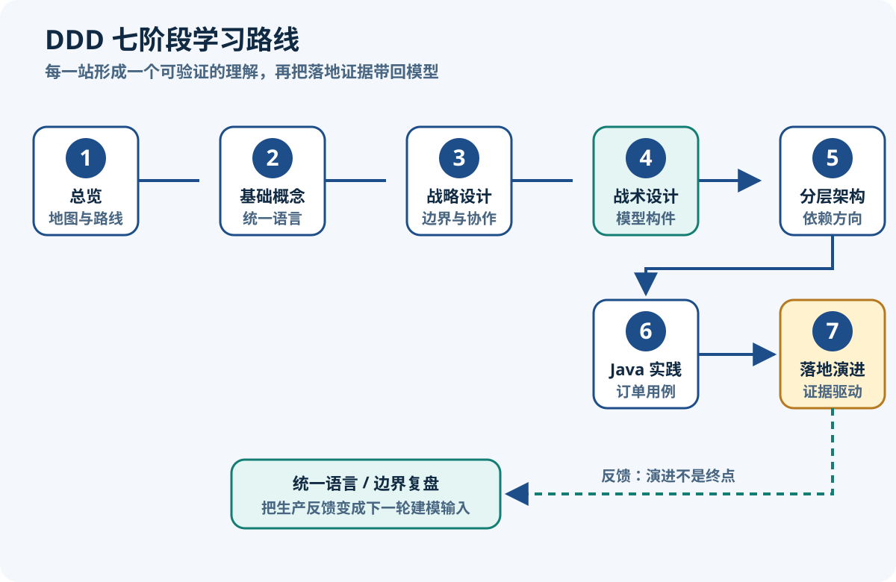

DDD 架构总览与学习路线
整理日期：2026-08-11；资料检索日期：2026-08-11
面向有 Java、Spring 与数据库基础的开发者：先建立正确地图，再逐步进入模型边界、战术模式和工程落地。
核心结论
- DDD 是在复杂领域中持续建模、对话和验证的工作方式，不是一套固定的 Controller–Service–Repository 分层模板。
- 战略设计回答“模型边界在哪里、边界之间怎样协作”，战术设计回答“在一个边界内怎样表达身份、值、行为与一致性”。
- 架构可以隔离数据库、Web 框架和消息中间件，保护领域模型独立演化；但分层、六边形或微服务架构本身都不等于 DDD。
- 统一语言连接业务对话、示例、测试和代码；语言一旦含混，模型与实现通常也会含混。
- DDD 应按业务复杂度选择性使用。简单 CRUD 可以保持简单，复杂且持续变化的规则才更能体现领域模型的收益。
来源定义：Eric Evans 的 DDD Reference汇总了原著中的定义与模式；Martin Fowler 将 DDD 的核心概括为复杂领域中的统一语言、可演化的软件模型与战略边界。工程解释：对 Java 开发者而言，重点不是先建多少包，而是先让代码中的名词、动作和规则能够接受业务人员检验。
DDD 全景

图中的路径可用文字等价表达为：从问题空间识别业务能力与约束，分析出不同子域；在解决方案中为模型建立限界上下文，让每个上下文拥有内部一致的统一语言与领域模型；再用实体、值对象、聚合、领域事件等战术构件表达规则；最后由应用用例、端口和适配器连接 HTTP、数据库或消息系统。此顺序不是一次性瀑布流程，而是可反复回退修正的学习地图。
来源定义：Fowler 的 Bounded Context 说明强调大型领域难以维持单一统一模型，应在明确边界内保持模型一致，并显式描述边界关系。实践建议：不要从“建微服务”倒推子域；先收集业务语言和决策规则，再讨论部署单元。
三个层次
| 层次 | 核心问题 | 主要产物 | 常见失败 | 可能的 Java 产物 |
|---|---|---|---|---|
| 战略设计 | 业务能力如何拆分？哪套语言和模型在哪个范围有效？上下文如何协作？ | 子域判断、限界上下文、上下文映射、核心领域取舍 | 按组织表或技术层切边界；试图建立全公司唯一模型 | 模块边界、上下文 API/事件契约、独立构建单元 |
| 战术设计 | 一个上下文内部怎样表达身份、值、行为、规则和一致性？ | 实体、值对象、聚合、领域服务、仓储、领域事件 | 把数据库表逐张变成类；只有 getter/setter；聚合无限扩大 | 普通 Java 类型、record 值对象、聚合根、领域异常、仓储接口 |
| 架构与实现 | 怎样执行用例，并让领域规则不被 Web、ORM、消息等技术细节绑住？ | 依赖方向、端口/适配器、事务和集成策略、可观测与部署方案 | 把选定架构当成 DDD 教条；框架注解渗透核心模型；为了模式而模式 | application service、input/output port、REST adapter、JPA adapter、module |
工程解释：三个层次相互反馈，却不能互相替代。Microsoft Learn 的领域分析指南也将战略阶段与用于精化领域模型的战术模式分开描述；其文章以微服务为应用场景，不代表 DDD 必须采用微服务。
Java 工程映射
| DDD 概念 | Java 工程翻译 | 必须保留的边界意识 |
|---|---|---|
| 限界上下文 | 可映射为 Java module、Maven module 或受约束的 package 边界 | 定义的是模型和语言的适用范围，不等于一个包，也不必等于一个微服务 |
| 聚合 | 在一次业务事务中共同保持一致的对象簇，由聚合根控制修改入口 | 不是对象图随意分组，也不是“一张主表加所有从表” |
| 应用用例 | application service 或 input port | 负责协调流程；关键业务规则仍由领域对象表达 |
| 仓储 | 面向领域集合语义的接口，适配器实现 JDBC/JPA 等持久化 | 接口形状服务于领域操作，不应机械暴露整套 DAO CRUD |
| 领域事件 | 不可变 Java 对象或 record，表达已经发生且有业务意义的事实 | 并不自动意味着 Kafka、异步消息或事件溯源 |
| 端口 / 适配器 | 用例接口与技术实现类 | 来自架构模式，是保护模型的一种选择，不是 DDD 定义本身 |
实践建议：上表是工程翻译而非来源定义。Alistair Cockburn 的六边形架构原文把端口描述为有目的的交互边界、把适配器描述为技术转换；团队可以用它隔离技术细节，也可以选择其他同样能保护领域模型的结构。
七篇学习路线

图中的顺序等价为：先用本篇建立全景，再学习领域、模型和统一语言；随后识别子域与上下文，进入聚合等战术构件；比较分层、六边形、整洁等实现结构；完成 Java 订单用例；最后用渐进策略处理遗留系统与常见误区。每一步都以前一步的业务证据为输入。
| 篇次 | 学习目标 | 关键问题 | Java 实践 | 完成标准 |
|---|---|---|---|---|
| 1. 总览 | 建立 DDD 全景地图 | 战略、战术、架构分别解决什么？ | 把概念映射到 module、普通 Java 类型和端口 | 能解释 DDD 不等于分层或微服务 |
| 2. 基础概念 | 建立可演化的业务语言 | 领域、模型、语言、代码如何区分并反馈？ | 以 Order.submit() 表达业务动作 | 能把含混 CRUD 改写为业务语言 |
| 3. 战略设计 | 识别问题与模型边界 | 问题空间如何拆分？模型边界怎样划定和协作？ | 为订单、库存等上下文定义接口契约 | 能解释子域与限界上下文的差别 |
| 4. 战术设计 | 用对象表达业务规则 | 如何表达身份、值、规则和事务一致性？ | 设计实体、值对象、聚合与领域事件 | 聚合边界有明确不变量证据 |
| 5. 架构模式 | 隔离技术细节与领域模型 | 哪些依赖方向能保护模型？ | 比较分层、六边形、整洁架构的包与依赖 | 能按约束选型而非套模板 |
| 6. 订单实践 | 贯通一个订单用例 | 如何把一个用例端到端实现？ | Java 21 + Spring 应用层 + 持久化适配器 + 测试 | 规则测试不依赖 Spring 或数据库 |
| 7. 落地演进 | 形成渐进采用策略 | 遗留系统如何采用 DDD 并避免模式堆砌？ | 从热点规则提取模型并建立架构约束 | 能提出小步、可验证的采用计划 |
前置知识
- 能够阅读 Java 21 的类、枚举、接口、异常和
record；无需掌握预览特性。 - 理解基本的 Spring Web/Service 调用、事务和关系数据库持久化即可。
- 愿意追问业务术语、具体例子、边界条件和不变量，而不是直接画表或生成 CRUD。
- 不要求微服务经验。本系列先讨论模型，再选择单体模块或分布式部署；DDD、CQRS、事件溯源和微服务之间没有强制绑定。
术语速览
- Domain（领域）
- 软件所面对的业务活动与知识范围。
- Domain Model（领域模型）
- 为特定目的选择、组织并表达领域知识的抽象，不是现实或数据库的完整复制。
- Ubiquitous Language（统一语言）
- 团队在一个模型边界内共同使用、并随理解持续演化的严格语言。
- Subdomain（子域）
- 问题空间中相对内聚的业务能力或问题区域。
- Bounded Context（限界上下文）
- 某套模型与统一语言保持一致、具有明确含义的适用边界。
- Aggregate（聚合）
- 作为数据修改与一致性边界处理的一簇领域对象。
- Domain Event（领域事件）
- 领域中已经发生、领域专家关心的事实。
- Port（端口）
- 应用与外界之间一类有目的交互的技术无关契约。
- Adapter（适配器）
- 把 HTTP、数据库、消息等具体技术转换为端口交互的组件。
边界提醒：前七项来自 DDD 语境，端口和适配器来自六边形架构。把它们并列是为了学习工程落地，不表示 DDD 要求六边形架构。
学习方法
- 业务对话：请业务人员讲一个具体决策或异常，而不是只给字段清单。
- 例子与不变量：记录成功例、反例、状态转换，以及“任何时候都必须成立”的规则。
- 模型与代码：用统一术语命名测试与 Java 类型，把关键行为放到能守住规则的对象中。
- 反馈与修订：让业务人员读示例，让测试暴露歧义；修订术语、边界和代码，再进入下一轮。
来源定义：Fowler 对统一语言的说明强调在与领域专家的对话中检验语言，并随团队理解增长而演化。实践建议：每轮只攻克一个有决策含量的业务场景，保留被推翻的假设，避免一次设计“完整模型”。
验收标准
完成本篇后，你应当能够：
- 用自己的话区分战略设计、战术设计和架构实现，并各举一个产物；
- 解释 DDD 为什么适合复杂、变化频繁且知识密集的领域，同时承认简单 CRUD 的合理性；
- 说明限界上下文与 Java module、聚合与事务边界只是有条件的工程映射；
- 明确说出 DDD 不要求微服务、CQRS、事件溯源、六边形架构或固定包结构。
预习练习：不用画数据库表，回答“客户在什么条件下可以取消订单？”列出参与者、业务动作、订单可能状态、三条不变量、两个失败原因，以及需要业务人员澄清的词。若答案仍只有 update order_status，说明你描述的是数据修改，还没有建立业务模型。
参考资料
资料检索于 2026-08-11。以下均为作者原站或官方技术资料；正文为自行归纳。
- Eric Evans / Domain Language：DDD Reference — DDD 定义与模式的作者参考入口。
- Eric Evans：Domain-Driven Design Reference（PDF） — 统一语言、模型驱动设计、聚合及战略设计的原始摘要。
- Martin Fowler：Domain Driven Design — DDD 的复杂领域、演化模型、战略设计概览。
- Martin Fowler：Bounded Context — 大模型拆分、内部一致性与上下文关系。
- Microsoft Learn：Use domain analysis to model microservices — 战略与战术阶段、业务能力和模型边界的实现视角。
- Alistair Cockburn：Hexagonal Architecture 原文 — 端口与适配器的原始架构说明。
DDD 七篇专题导航
- DDD 架构总览与学习路线（本篇）
- DDD 基础概念与统一语言
- DDD 战略设计与限界上下文
- DDD 战术设计与领域模型
- DDD 分层架构模式对比
- DDD 订单领域 Java 实践
- DDD 落地演进与常见误区